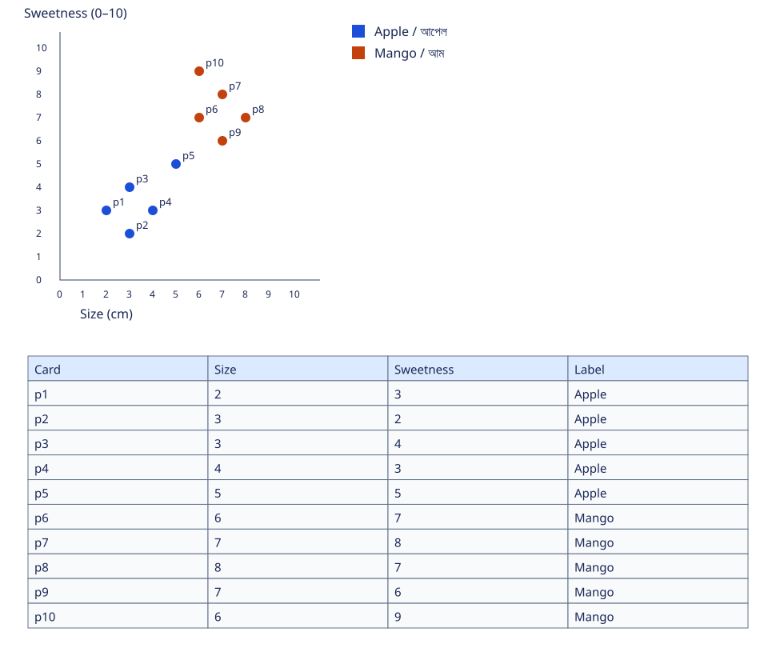
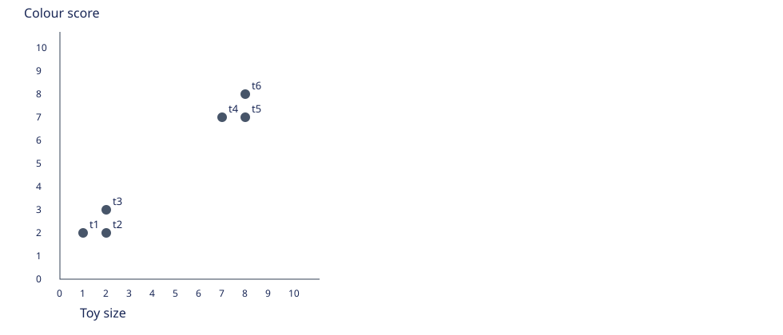
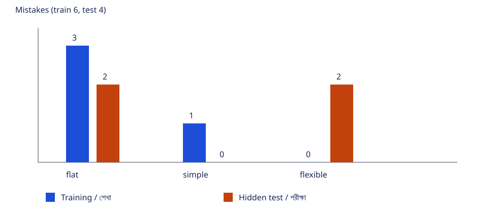

Mina packs a final envelope for Nana. It contains fruit dots, a rule card and a sealed-answer game. Nana brings a pencil instead of a computer. Today he must explain his guesses so Tuktuk can question them.
Allow about forty-five minutes for this worksheet. Bring paper, a pencil and two colours. Work alone first, then compare reasons with a partner. Write an answer before opening its worked explanation.
The questions review learning, everyday apps, features, labels, rules, learning types, hidden tests and responsibility. Pictures use invented data. No programming knowledge or formulas are needed. The optional coding section is a paper plan for later study.

Write both axis names. Then say which information the dot's colour supplies. Do not treat p6 as a measured feature.
Circle every mistaken dot before counting. The line rule ignores sweetness, so height cannot rescue a dot on the wrong side.

Suggest one grouping and explain its purpose. A cluster is not automatically a known animal or fruit category.

There are six training and four test cards. State both piles when explaining the flexible rule's result. A zero training bar is not a guarantee.

Write what information is missing. Propose an opportunity to collect it fairly, rather than making up race times.
The exam questions give worked answers for these counts and for longer explanations. Mark each wrong card explicitly, rather than guessing from the overall colours.
Read this paper instruction: “If size is five or less, say apple. Otherwise say mango.” For sizes four, five and six, write the three names in order. Explain the middle case using the words “or less”.
No program needs to run for this module. You are practising careful rule reading. Later, programming will express the same decisions in a language a computer can execute.
Describe a future fruit-rule program in three plain steps: receive a size, compare it with the dividing value, and report a name. Add a fourth step for checking the guess when a real label becomes available. Keep learning and checking separate in your plan.
If you have never programmed, continue with paper cards. The written practice problems below ask for reasoning, not computer syntax. You can return to this plan after the Python tools module.
For Pictures 1–5, the core answers are: size six and sweetness seven with mango label; one mistake; unsupervised grouping; the flexible rule; and no, missing records cannot establish low speed. Give yourself credit for explaining the evidence, not only choosing the right word.
For the paper fence counts, three gives two mistakes and five gives none. Size-six cards are p6 and p10, with sweetness seven and nine; both say mango. The simple model has zero errors on the four hidden cards shown. Five of eight cards remain when three are set aside. The instruction-reading names are apple, apple, mango.
If rows or axes confused you, revisit features and labels. If the fence counts differed, replay learning a rule. For learning setups, return to three ways to learn.
If you selected a rule using hidden answers, review the sealed exam idea. For unfair selection or photo permission, reread responsible use. A discussion answer can differ from the guide if its reasons protect the people affected.
When you can explain your reasons, continue to setting up the Python toolbox.